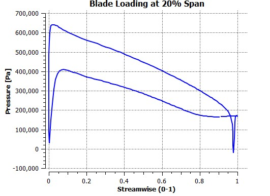

Meridoinal plane of the runner
Curve for hub of the runner
Streamlines obtained in MATLAB
Leading and trailing edge plot of the runner
Runner geometry in Bladegen
Turbogrid meshing in ANSYS
3D streamline of the runner
Pressure contour on the pressure side of the runner
Pressure contour on the suction side of the runner

Pressure plot along 20% of the blade span
Pressure plot along 80% of the blade span